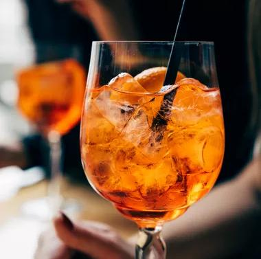

Aperol Spritz

A simple, refreshing Italian beverage
The Aperol Spritz is a simple Italian cocktail that is simple to make and easy to sip.
You can customize the drink to your preferred sweetness with your choice of dryer or sweeter prosecco wine.
Ingredients:
- 4 ounces of Prosecco
- 2 ounces of Aperol liqueur
- 1 ounce club soda
- Orange slice for garnish
How to prepare:
- Pour the prosecco, Aperol and club soda into a wine glass filled with ice
- Stir your ingredients together
- Garnish with the orange slice
- Spero ti piaccia!